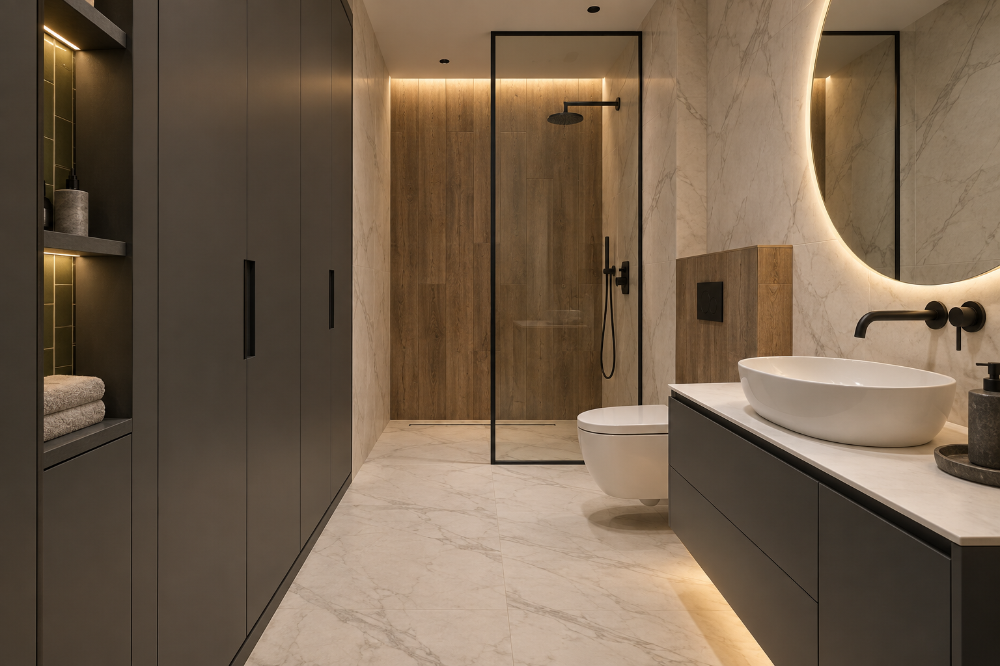

План расстановки
КВАРТИРА / САНУЗЕЛЭСКИЗ · 15.09.2026ЛИСТ 02
САНУЗЕЛ У ВХОДА · РЕДАКЦИЯ 02
Новый образ санузла по мотивам ваших дизайн-проектов. Чёткая геометрия, тёплый свет и спокойные фактуры.
Исследовать пространство ↗
РАССТАНОВКА ПО ВАШЕЙ КАРТИНКЕ
Вращайте модель, меняйте ракурс и свет.
Каждый предмет привязан к размерной схеме.
Загружаем модель…
АЛЬБОМ ЧЕРТЕЖЕЙ
ОБОЗНАЧЕНИЯ И ПРИВЯЗКИ
Все размеры в мм. Высоты — от чистого пола. Отрицательный x обозначает точку в коридоре. Размеры соседей — временная основа.
06 / ПАЛИТРА И КОМПЛЕКТАЦИЯ
Основной характер — из ДП 06‑21.
Графит и лаконичные формы — из ДП 10‑22.
Пол и основные стены. Керамогранит с мягкими прожилками, ориентир 600 × 1200 мм.
Душевая стена и инсталляция. Плитка под дерево, ориентир 200 × 1200 мм.
Шкаф, тумба и скрытая дверь. Влагостойкие фасады с утопленными ручками.
Небольшой акцент внутри ниши. Чёрные смесители и рамка душевого стекла связывают отделку.
| Элемент | Идея для подбора | Что уточняем |
|---|---|---|
| Подвесная тумба | 850 × 500 мм; графит, светлая столешница | Чаша и высота смесителя |
| Шкаф | 1670 × 700 мм; три секции | Наполнение и высота до потолка |
| Душевой экран | Прозрачное стекло, чёрный профиль | Толщина стекла и крепления у изготовителя |
| Зеркало | Круглое Ø 800 мм, тёплый контур | Высота под рост пользователей |
| Свет | 3000 K; у зеркала CRI ≥ 90 | Оптика, яркость и исполнение по зоне |
ПРОЕКТ РАЗВИВАЕТСЯ
В ДП 06‑21 изучены визуализации и развёртки санузла, листы света и розеток. Из ДП 10‑22 взяты принципы палитры и подачи развёрток. «Планировочные решения» использованы как пример читаемого плана с мебелью, размерами и экспликацией.
Их инструкции и размеры относятся к другим квартирам. Здесь сохранена ваша схема санузла. Места электрики предварительные: перед монтажом нужны обмер, выбранное оборудование и проверка электриком зон душа, защиты и существующего вентиляционного канала.
Интерьерный образ создан с ИИ для обсуждения отделки; его детали могут отличаться от измеряемой модели. Для расстановки используйте 3D и лист 02.